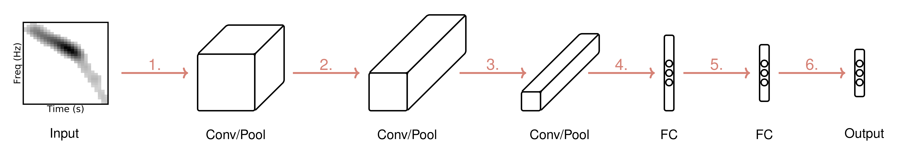
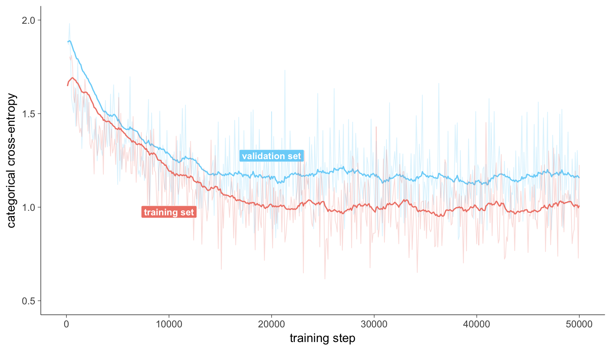
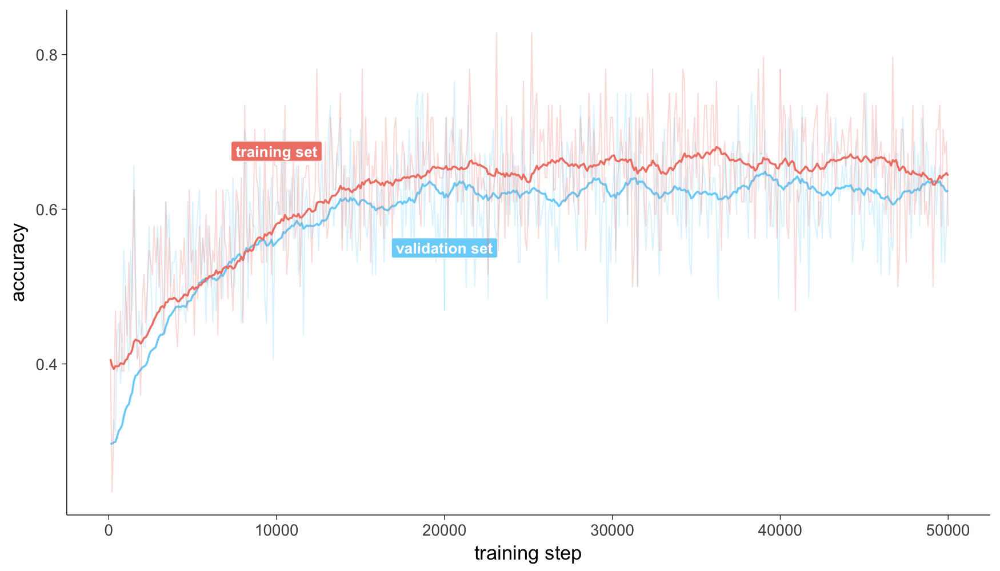
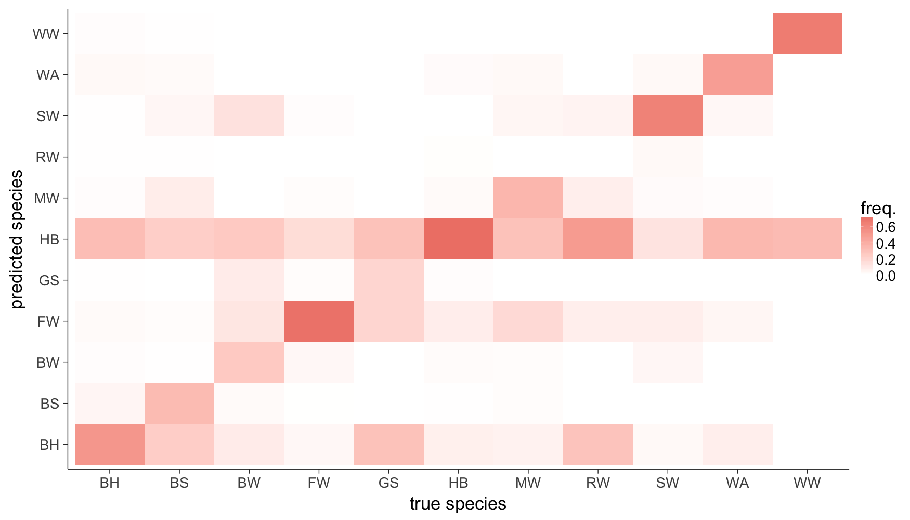
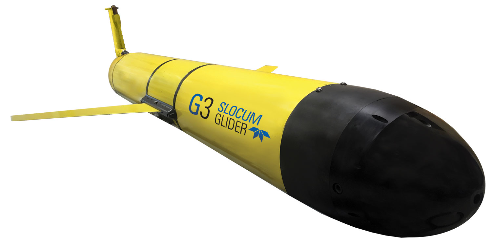

8th DCLDE Workshop
Paris, France, 4-8 June 2018
MammalNet
Marine mammal species classification using Convolutional Neural Networks
Mark Thomas1,2, Bruce Martin1,3 & Stan Matwin2
1 JASCO Applied Sciences, Dartmouth, Nova Scotia, Canada
2 Dalhousie University, Department of Computer Science
3 Dalhousie University, Department of Oceanography
Presentation outline
- What is the problem we're trying to address?
Marine mammal species classification
- Proposed methodology
Deep Convolutional Neural Networks
- Current experimental results
Training details, plots, and tables.
Marine mammal species classification
Provided a large corpus of annotated spectrograms of mammal vocalizations and their corresponding species label.
Dataset
- Large dataset
(≈ 450,000 instances)
- Human annotated spectrograms of marine mammal vocalizations
- Zero-padded to meet a pre-specified dimension
- Training, validation, and test split
image sources: animalspot.net, govt.nz, soundrolling.com, thelocal.dk, whales.org, wikipedia.org & worldwildlife.org
There is just one problem...
I'm a computer scientist* 👨💻 😅
* so not really a scientist?
Proposed Methodology
Can I naïvely think of these spectrogram annotations as greyscale images?
Can I treat this as an image classification problem and use a ConvNet?
Network Architecture (1)
MammalNet: deep CNN inspired by the classic LeNet architecture [1]
- 32 5x5x1 convolution kernels → 2x downsampling via max-pooling
- 64 5x5x32 convolution kernels → 2x downsampling via max-pooling
- 64 5x5x64 convolution kernels → 2x downsampling via max-pooling
- Flattening → Fully-connected layer of length 2048
- Fully-connected layer of length 1024
- Output layer for the possible 11 classes
Network Architecture (2)
Further details...
Training the ConvNet
Some details on training such a large model:
- Trained on Compute Canada using an NVIDIA Tesla P100 GPU
- 100 epochs per training run using minibatches of size 64
- Training time ≈10hrs
Experimental Results (1)
Experimental Results (2)
Experimental Results (3)
Future Work (1)
Advances in image recognition led to further advances in object detection!
Can we apply the same deep learning techniques here? (e.g.: Sermanet et al. 2013 [4], Redmon et al. 2016 [5])
Future Work (2)
Provided Future Work (1) is feasible...
Deployment to a real-time agent (e.g.: autonomous gliders)

image source: teledynemarine.com
Thank you for listening!
 |
 |
 |